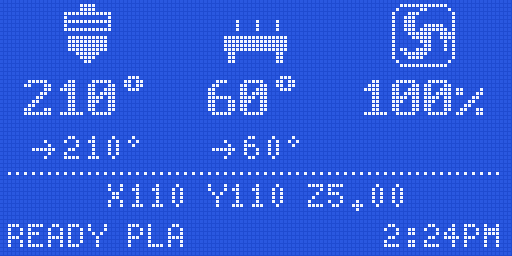

PD-KLP-USA-1

INSTRUCTION BOOKLET
For the Printdeck touch screen and Klipper printers


At the first start, the deck makes its password and opens the setup.


You can also set the Wi-Fi before the first start: put the disk in a computer, and fill in printdeck.txt on the PRINTDECK partition.
A new Printdeck has no printer config. The deck then shows the printer setup.


The board of the printer must run the Klipper firmware of this Printdeck. The deck writes it through the USB cable.

The deck stops Klipper, resets the board into its bootloader, writes the firmware, and reads it back to check it. Then Klipper starts again. The setup screen and the Klipper error screen also show this key when the board has no Klipper firmware or old firmware. Printdeck can flash boards with an atmega2560 and an STK500v2 bootloader now, for example the RAMBo and RAMPS boards.
Printdeck is a touch screen for a 3D printer that runs Klipper. It shows the print, and it controls the printer.
When the printer does not print, the deck shows the idle screen. The largest key is the action that you need most: Print a file.
The keys are the keys of a machine. A key with an LED has two states, and its LED is lit while it is on: the page that is open, the material in the printer, Preheat. A key with no LED does an action: an orange ring shows that it took the tap.
Each screen has the same places. At the left, the display of the printer, and under it the key panel: Main (the idle screen), Files, Filament, Move, Maintenance and Machine. At the right, the page that is open: its title and Back at the top, and its actions in one row at the bottom, with the main action at the right.

When the printer has a display, the deck draws it. The display shows the status screen, the same picture as the idle screen of the deck.
Turn or click the knob to open the menu. The menu has the same pages and keys as the touch screen: the knob moves the cursor, and a click taps the key. The touch screen shows the cursor with an orange ring. The top item goes back: Status on the home menu, Back on a page. A long click also goes back. With no turn for 20 seconds, the display shows the status screen again.
While an action runs, the display shows an animation.


Open http://printdeck.local in a browser on the same network, and log in with the password of the deck. The browser shows the same screens as the touch screen, sharp at the pixel density of the phone. Each browser has its own screens, so a phone can show the files while the deck shows the print.
On a phone, use Add to Home Screen: the deck then opens as an app, with no browser bars.
The page http://printdeck.local/system shows the version, the services, the logs and the API key for slicers. It also installs an update: choose the update file, then Install. The deck writes the other system slot and restarts into it. If the new system does not start, the deck goes back to the old one.
The deck answers the OctoPrint API that slicers use to send files and to start prints.
In Cura, add the deck with the OctoPrint Connection plugin. The deck asks "Allow Cura to use the Printdeck?". Tap Allow.
In OrcaSlicer or PrusaSlicer, add a printer of the type OctoPrint with the address http://printdeck.local, and the API key of the system page.
The files are the G-code files that the slicer sent, or that you uploaded in the browser. The newest file is at the top.
Each file shows what the slicer wrote into it: the print time, the filament and the layer height. Cura, PrusaSlicer, OrcaSlicer and Bambu Studio write this data. A thumbnail shows when the slicer adds one.

Drag the list up and down. Tap a file to open it.

During a print, the deck shows the screen of the phase of the print. The deck knows the phase from the printer and from the G-code of the file.


Menu on the screens of the print shows the other screens while the print runs: the files, the filament and the rolls, the history. They are read only for the printer, so a tap cannot change the print by mistake.
The print bar at the bottom of each screen shows the print. Tap it to go back. The deck also goes back to the print at a pause, at a new print, and after 2 minutes with no touch.

Set the loaded filament here, so that Preheat uses its temperatures. The guided change heats the nozzle, unloads the old filament and loads the new one.
The deck keeps a list of your rolls of filament. Weigh a new roll with its reel, and the deck subtracts the weight of the empty reel. Each print subtracts the filament that it used from the roll in the printer.


Maintenance lists the calibrations that your printer has. The list comes from the config of the printer.


While an action runs, the deck shows it on the deck and in each browser, and the other keys are off. The display of the printer shows the name of the action and a moving bar. When the action ends, a short message says that it is done. When it fails, the deck shows the error of Klipper until you tap OK.

This screen shows by itself while Klipper runs a paper test, also when it started from a macro.
Machine has the information of the printer, the history of the prints, the macros, the console and the settings.


The deck checks for a new version once a day. Machine then shows Software update in orange.
Each version has a signature. The deck installs only a version with a valid signature of Printdeck. It writes the other system slot and restarts into it. If the new system does not start, the deck goes back to the old one.

When Klipper stops with an error, the deck shows all the lines of its message.

The file printdeck.txt on the PRINTDECK partition holds the settings. Put the disk in a computer to change it. The deck reads it at each start, then clears the Wi-Fi password in it.
| wifi_ssid, wifi_password, wifi_country | The Wi-Fi network |
| hostname, timezone | The name on the network, and the time zone |
| display_rotate | 90 or 270 for a display that is mounted tall, 0 or 180 for one that is mounted wide |
| touch_invert_x, touch_invert_y, touch_swap_xy | 1 turns an axis of the touch screen |
| preheat_tool, preheat_bed | The temperatures of Preheat with no filament set |
| night_from, night_to | The hours of the night colors |
| printer.cfg (a file) | A Klipper config. The deck takes it at the next start. |
Printdeck is free software: AGPL-3.0, with the Go port of Klipper under GPL-3.0. The deck draws every picture of this booklet.
https://github.com/beetlebugorg/printdeck